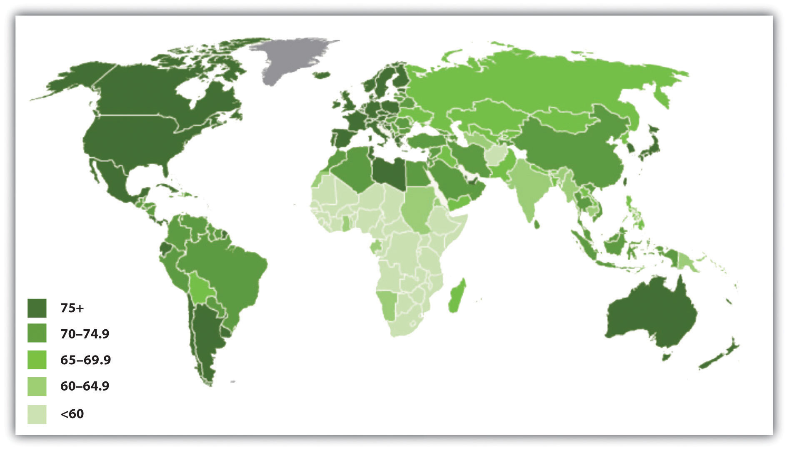
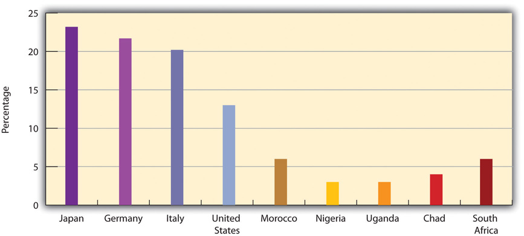
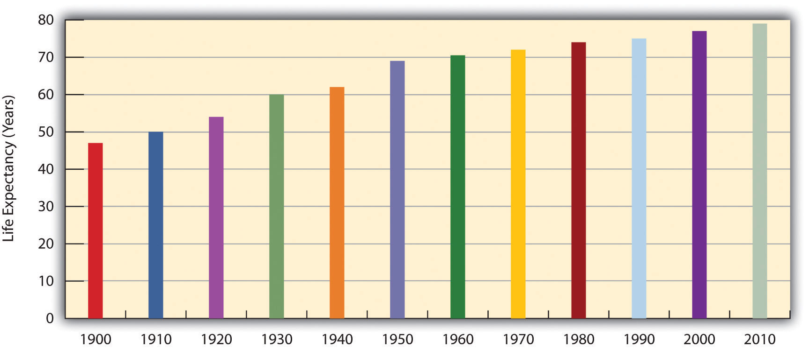
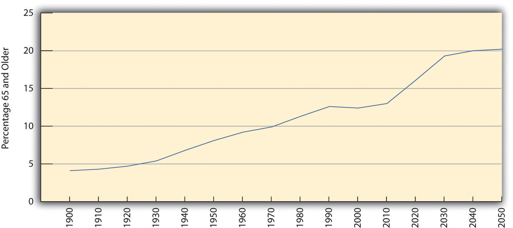
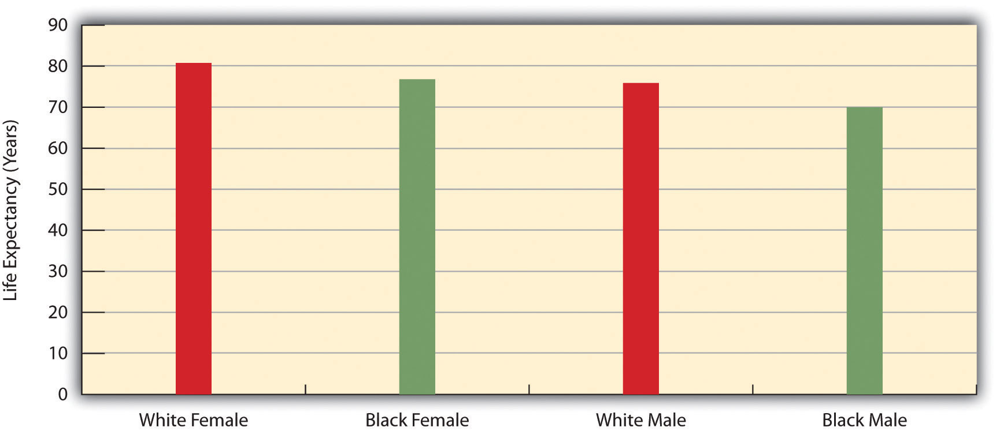
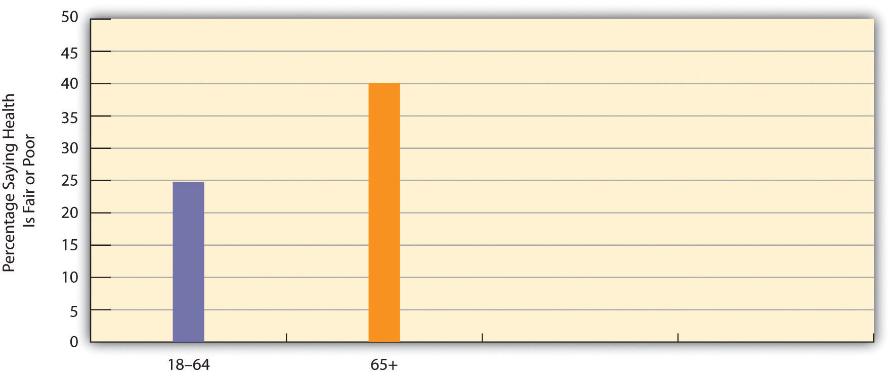
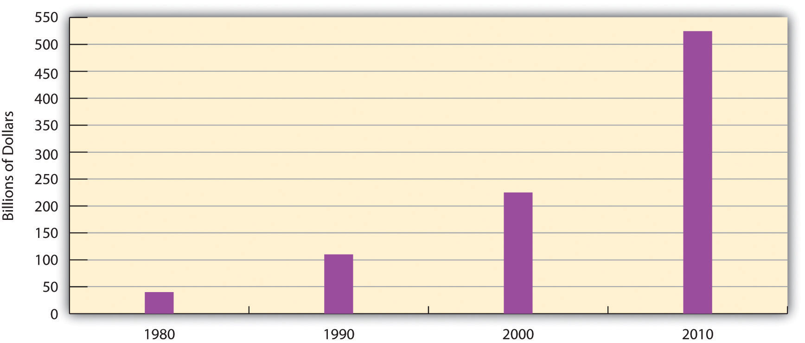

“Still Working: Economy Forcing Retirees to Re-enter Workforce,” the headline said. The story featured four seniors, ranging in age from 66 to their eighties, in southern California who had retired several years ago but were now trying to get back into the labor force. Because of the faltering economy and rising costs, they were having trouble affording their retirement. They were also having trouble finding a job, in part because they lacked the computer skills that are virtually a necessity in today’s world to find and perform a job. One of the unemployed seniors was a retired warehouse worker who did not know how to fill out a job application online. He said, “To say I have computer skills—no, I don’t. But I can learn. I will do anything to get work.” An official in California’s Office on Aging indicated that employers who hire older people would be happy they did so: “You know the person’s going to come in and you know they’re going to accomplish something while they’re there. And, they are a wellspring of knowledge.”
Source: Barkas, 2011Barkas, S. (2011, September 5). Still working: Economy forcing retirees to re-enter workforce. The Desert Sun. Retrieved from http://www.mydesert.com.
The number of older Americans is growing rapidly. As this news story suggests, they have much to contribute to our society. Yet they also encounter various problems because of their advanced age. We appreciate our elderly but also consider them something of a burden. We also hold unfortunate stereotypes of them and seemingly view old age as something to be shunned. Television commercials and other advertisements extol the virtues of staying young by “washing away the gray” and by removing all facial wrinkles. In our youth-obsessed culture, older people seem to be second-class citizens. This chapter discusses views about aging and the ways in which old age is a source of inequality.
Here is why you should want to know about aging and the problems older people face: You will be old someday. At least you will be old if you do not die prematurely from an accident, cancer, a heart attack, some other medical problem, murder, or suicide. Although we do not often think about aging when we are in our late teens and early twenties, one of our major goals in life is to become old. By studying age and aging and becoming familiar with some of the problems facing the elderly now and in the future, we are really studying something about ourselves and a stage in the life course we all hope to reach.
The study of aging is so important and popular that it has its own name, gerontologyThe study of aging.. Social gerontology is the study of the social aspects of aging (Novak, 2012).Novak, M. (2012). Issues in aging (3rd ed.). Upper Saddle River, NJ: Pearson. The scholars who study aging are called gerontologists. The people they study go by several names, most commonly “older people,” “elders,” and “the elderly.” The latter term is usually reserved for those 65 or older, while “older people” and “elders” often include people in their fifties as well as those 60 or older.
Age and aging have four dimensions. The dimension most of us think of is chronological ageThe number of years since we were born., defined as the number of years since someone was born. A second dimension is biological agingThe physical changes that “slow us down” as we get into our middle and older years., which refers to the physical changes that “slow us down” as we get into our middle and older years. For example, our arteries might clog up, or problems with our lungs might make it more difficult for us to breathe. A third dimension, psychological agingThe psychological changes, including those involving mental functioning and personality, that occur as we age., refers to the psychological changes, including those involving mental functioning and personality, that occur as we age. Gerontologists emphasize that chronological age is not always the same thing as biological or psychological age. Some people who are 65, for example, can look and act much younger than some who are 50.
The fourth dimension of aging is social. Social agingThe changes in roles and relationships that occur as people age. refers to changes in a person’s roles and relationships, both within their networks of relatives and friends and in formal organizations such as the workplace and houses of worship. Although social aging can differ from one individual to another, it is also profoundly influenced by the perception of aging that is part of a society’s culture. If a society views aging positively, the social aging experienced by individuals in that society will be more positive and enjoyable than in a society that views aging negatively. As we shall see, though, the perception of aging in the United States is not very positive, with important consequences for our older citizens.
Recall that social aging refers to changes in people’s roles and relationships in a society as they age. Social gerontologists have tried to explain how and why the aging process in the United States and other societies occurs. Their various explanations, summarized in Table 6.1 "Theory Snapshot", help us understand patterns of social aging. They fall roughly into either the functionalist, social interactionist, or conflict approaches discussed in Chapter 1 "Understanding Social Problems".
Table 6.1 Theory Snapshot
| Theoretical perspective | Major assumptions |
|---|---|
| Disengagement theory | To enable younger people to assume important roles, a society must encourage its older people to disengage from their previous roles and to take on roles more appropriate to their physical and mental decline. This theory is considered a functionalist explanation of the aging process. |
| Activity theory | Older people benefit themselves and their society if they continue to be active. Their positive perceptions of the aging process are crucial to their ability to remain active. This theory is considered an interactionist explanation of the aging process. |
| Conflict theory | Older people experience age-based prejudice and discrimination. Inequalities among the aged exist along the lines of gender, race/ethnicity, and social class. This theory falls into the more general conflict theory of society. |
One of the first explanations was called disengagement theoryThe view, now largely abandoned, by some past social gerontologists that a society needs to encourage its elderly to disengage from their previous roles and to take on roles more appropriate to their declining physical and mental abilities. (Cumming & Henry, 1961).Cumming, E., & Henry, W. E. (1961). Growing old: The process of disengagement. New York, NY: Basic Books. This approach assumed that all societies must find ways for older people’s authority to give way to younger people. A society thus encourages its elderly to disengage from their previous roles and to take on roles more appropriate to their physical and mental decline. In this way, a society effects a smooth transition of its elderly into a new, more sedentary lifestyle and ensures that their previous roles will be undertaken by a younger generation that is presumably more able to carry out these roles. Because disengagement theory assumes that social aging preserves a society’s stability and that a society needs to ensure that disengagement occurs, it is often considered a functionalist explanation of the aging process.
A critical problem with this theory was that it assumes that older people are no longer capable of adequately performing their previous roles. However, older people in many societies continue to perform their previous roles quite well. In fact, society may suffer if its elderly do disengage, as it loses their insight and wisdom. It is also true that many elders cannot afford to disengage from their previous roles; if they leave their jobs, they are also leaving needed sources of income, as the opening news story discussed, and if they leave their jobs and other roles, they also reduce their social interaction and the benefits it brings.
Today most social gerontologists prefer activity theoryThe view by social gerontologists that older people will benefit both themselves and their society if they remain active and try to continue to perform the roles they had before they aged., which assumes that older people benefit both themselves and their society if they remain active and try to continue to perform the roles they had before they aged (Choi & Kim, 2011).Choi, N. G., & Kim, J. (2011). The effect of time volunteering and charitable donations in later life on psychological wellbeing. Ageing & Society, 31(4), 590–610. As they perform their roles, their perception of the situations they are in is crucial to their perception of their aging and thus to their self-esteem and other aspects of their psychological well-being. Because activity theory focuses on the individual and her or his perception of the aging process, it is often considered a social interactionist explanation of social aging.
One criticism of activity theory is that it overestimates the ability of the elderly to maintain their level of activity: Although some elders can remain active, others cannot. Another criticism is that activity theory is too much of an individualistic approach, as it overlooks the barriers many societies place to successful aging. Some elders are less able to remain active because of their poverty, gender, and social class, as these and other structural conditions may adversely affect their physical and mental health. Activity theory overlooks these conditions.
Explanations of aging grounded in conflict theory put these conditions at the forefront of their analyses. A conflict theoryThe view by social gerontologists that ageism and structural obstacles pose several problems for the elderly and prevent them from realizing their potential and for achieving the best physical and mental health possible. of aging, then, emphasizes the impact of ageismNegative views about and prejudice and discrimination against older people., or negative views about old age and prejudice and discrimination against the elderly (Novak, 2012).Novak, M. (2012). Issues in aging (3rd ed.). Upper Saddle River, NJ: Pearson. According to this view, older workers are devalued because they are no longer economically productive and because their higher salaries (because of their job seniority), health benefits, and other costs drive down capitalist profits. Conflict theory also emphasizes inequality among the aged along gender, race/ethnicity, and social class lines. Reflecting these inequalities in the larger society, some elders are quite wealthy, but others are very poor.
One criticism of conflict theory is that it blames ageism on modern, capitalist economies. However, negative views of the elderly also exist to some extent in modern, socialist societies and in preindustrial societies. Capitalism may make these views more negative, but such views can exist even in societies that are not capitalistic.
When we look historically and cross-culturally, we see that old age is a relative term, since few people in preindustrial times or in poor countries today reach the age range that most Americans would consider to be old, say 65 or older. When we compare contemporary societies, we find that life expectancyThe average age to which people can be expected to live., or the average age to which people can be expected to live, varies dramatically across the world. As Figure 6.1 "Average Life Expectancy across the Globe (Years)" illustrates, life expectancy in North America, most of Europe, and Australia averages 75 years or more, while life expectancy in most of Africa averages less than 60 years (Population Reference Bureau, 2011).Population Reference Bureau. (2011). 2011 world population data sheet. Washington, DC: Author.
Figure 6.1 Average Life Expectancy across the Globe (Years)
Source: Adapted from Population Reference Bureau. (2011). The world at 7 billion: World population data sheet: Life expectancy. Retrieved from http://www.prb.org/publications/datasheets/2011/world-population-data-sheet/world-map.aspx#/map/lifeexp.
What accounts for these large disparities? The major factor is the wealth or poverty of a nation, as the wealthiest nations have much longer life expectancies than the poorest ones. This is true because, as Chapter 2 "Poverty" noted, the poorest nations by definition have little money and few other resources. They suffer from hunger, AIDS, and other diseases, and they lack indoor plumbing and other modern conveniences found in almost every home in the wealthiest nations. As a result, they have high rates of infant and childhood mortality, and many people who make it past childhood die prematurely from disease, starvation, and other problems.
These differences mean that few people in these societies reach the age of 65 that Western nations commonly mark as the beginning of old age. Figure 6.2 "Percentage of Population Aged 65 or Older, 2011" depicts the percentage of each nation’s population that is 65 or older. Not surprisingly, the nations of Africa have very low numbers of people 65 or older. In Uganda, for example, only 3 percent of the population is at least 65, compared to 13 percent of Americans and 20–21 percent of Germans and Italians.
Figure 6.2 Percentage of Population Aged 65 or Older, 2011
Source: Adapted from Population Reference Bureau. (2011). 2011 world population data sheet. Washington, DC: Author. Retrieved from http://www.prb.org/pdf11/2011population-data-sheet_eng.pdf.
Despite these international disparities, life expectancy overall has been increasing around the world. It was only 46 years worldwide in the early 1950s but was 69 in 2009 and is expected to reach about 75 by 2050 (Population Reference Bureau, 2011).Population Reference Bureau. (2011). 2011 world population data sheet. Washington, DC: Author. This means that the number of people 65 or older is growing rapidly; they are expected to reach almost 1.5 billion worldwide by 2050, three times their number today and five times their number just twenty years ago (United Nations Population Division, 2011).United Nations Population Division. (2011). World population prospects: The 2010 revision. New York, NY: Author. Despite international differences in life expectancy and the elderly percentage of the population, the world as a whole is decidedly “graying,” with important implications for the cost and quality of elder care and other issues.
As life expectancy rises in poor nations, these nations will experience special problems (Hayutin, 2007).Hayutin, A. M. (2007). Graying of the global population. Public Policy & Aging Report, 17(4), 12–17. One problem will involve paying for the increased health care that older people in these nations will require. Because these nations are so poor, they will face even greater problems than the industrial world in paying for such care and for other programs and services their older citizens will need. Another problem stems from the fact that many poor nations are beginning or continuing to industrialize and urbanize. As they do so, traditional family patterns, including respect for the elderly and the continuation of their roles and influence, may weaken. One reason for this is that urban families have smaller dwelling units in which to accommodate their elderly relatives and lack any land onto which they can build new housing. Families in poor nations will thus find it increasingly difficult to accommodate their elders.
Life expectancy has been increasing in the United States along with the rest of the world (see Figure 6.3 "Changes in US Life Expectancy at Birth, 1900–2010"). It rose rapidly in the first half of the twentieth century and has increased steadily since then. From a low of 47.3 years in 1900, it rose to about 71 years in 1970 and 77 years in 2000 and to more than 78 years in 2010. Americans born in 2010 will thus be expected to live about 31 years longer than those born a century earlier.
Figure 6.3 Changes in US Life Expectancy at Birth, 1900–2010
Sources: Data from Arias, E. (2010). United States life tables, 2006. National Vital Statistics Reports, 58(21), 1–40.
During the next few decades, the numbers of the elderly will increase rapidly thanks to the large baby boom generation born after World War II (from 1946 to 1964) that is now entering its mid-sixties. Figure 6.4 "Past and Projected Percentage of US Population Aged 65 or Older, 1900–2050" shows the rapid rise of older Americans (65 or older) as a percentage of the population that is expected to occur. Elders numbered about 3.1 million in 1900 (4.1 percent of the population), number about 40 million today, and are expected to reach 89 million by 2050 (20.2 percent of the population). The large increase in older Americans overall has been called the graying of America and will have important repercussions for elderly care and other aspects of old age in the United States, as we discuss later.
Figure 6.4 Past and Projected Percentage of US Population Aged 65 or Older, 1900–2050
Source: Data from Administration on Aging. (n.d.). Projected future growth of the older population by age: 1900–2050. Retrieved from http://www.aoa.gov/AoARoot/Aging_Statistics/future_growth/future_growth.aspx.
We have seen that inequality in life expectancy exists around the world, with life expectancy lower in poor nations than in wealthy nations. Inequality in life expectancy also exists within a given society along gender, race/ethnicity, and social class lines.
For gender, the inequality is in favor of women, who for both biological and social reasons outlive men across the globe. In the United States, for example, girls born in 2007 could expect to live 80.4 years on the average, but boys only 75.4 years.
In most countries, race and ethnicity combine with social class to produce longer life expectancies for the (wealthier) dominant race, which in the Western world is almost always white. The United States again reflects this international phenomenon: Whites born in 2007 could expect to live 78.4 years on the average, but African Americans only 73.6 years. In fact, gender and race combine in the United States to put African American males at a particular disadvantage, as they can expect to live only 70.0 years (see Figure 6.5 "Sex, Race, and Life Expectancy for US Residents Born in 2007"). The average African American male will die almost 11 years earlier than the average white woman.
Figure 6.5 Sex, Race, and Life Expectancy for US Residents Born in 2007
Source: Data from National Center for Health Statistics, US Department of Health and Human Services. (2010). Health, United States, 2010, with special feature on death and dying. Retrieved from http://www.cdc.gov/nchs/data/hus/hus10.pdf.
Like many other societies, the United States has a mixed view of aging and older people. While we generally appreciate our elderly, we have a culture oriented toward youth, as evidenced by the abundance of television characters in their twenties and lack of those in their older years. As individuals, we do our best not to look old, as the many ads for wrinkle creams and products to darken gray hair attest. Moreover, when we think of the elderly, negative images often come to mind. We often think of someone who has been slowed by age both physically and mentally. She or he may have trouble walking up steps, picking up heavy grocery bags, standing up straight, or remembering recent events. The term senile often comes to mind, and phrases like “doddering old fool,” “geezer,” and other disparaging remarks sprinkle our language when we talk about them. Meanwhile, despite some improvement, the elderly are often portrayed in stereotypical ways on television and in movies (Lee, Carpenter, & Meyers, 2007).Lee, M. M., Carpenter, B., & Meyers, L. S. (2007). Representations of older adults in television advertisements. Journal of Aging Studies, 21(1), 23–30.
How true is this negative image? What do we know of physical and psychological changes among the elderly? How much of what we think we know about aging and the elderly is a myth, and how much is reality? Gerontologists have paid special attention to answering these questions (Novak, 2012).Novak, M. (2012). Issues in aging (3rd ed.). Upper Saddle River, NJ: Pearson.
Biological changes certainly occur as we age. The first signs are probably in our appearance. Our hair begins to turn gray, our (male) hairlines recede, and a few wrinkles set in. The internal changes that often accompany aging are more consequential, among them being that (a) fat replaces lean body mass, and many people gain weight; (b) bone and muscle loss occur; (c) lungs lose their ability to take in air, and our respiratory efficiency declines; (d) the functions of the cardiovascular and renal (kidney) systems decline; (e) the number of brain cells declines, as does brain mass overall; and (f) vision and hearing decline. Cognitive and psychological changes also occur. Learning and memory begin declining after people reach their seventies; depression and other mental and/or emotional disorders can set in; and dementia, including Alzheimer’s disease, can occur.
All these conditions yield statistics such as follows: about half of people 65 or older have arthritis or high blood pressure; almost one-fifth have coronary heart disease; more than one-fifth have diabetes; and about 60 percent of women in their seventies have osteoporosis (Centers for Disease Control and Prevention & The Merck Company Foundation, 2007; Crawthorne, 2008).Centers for Disease Control and Prevention & The Merck Company Foundation. (2007). The state of aging and health in America 2007. Whitehouse Station, NJ: Merck Company Foundation; Crawthorne, A. (2008). Elderly poverty: The challenge before us. Washington, DC: Center for American Progress.
Still, the nature and extent of all these changes vary widely among older people. Some individuals are frail at 65, while others remain vigorous well into their seventies and beyond. People can be “old” at 60 or even 50, while others can be “young” at 80. Many elders are no longer able to work, but others remain in the labor force. All in all, then, most older people do not fit the doddering image myth and can still live a satisfying and productive life (Rowe et al., 2010).Rowe, J. W., Berkman, L. F., Binstock, R., Boersch-Supan, A., Cacioppo, J., Carsternsen, L., et al. (2010). Policies and politics for an aging America. Contexts, 9(1), 22–27.
To what extent are the effects of biological and psychological aging the inevitable results of chronological aging? Gerontologists are still trying to understand what causes these effects, and their explanations center on such things as a declining immune system, the slowing of cellular replication, and other processes that need not concern us here.
One thing is clear: We can all take several steps to help us age better, because what we do as we enter our older years matters much more than genetics (Centers for Disease Control and Prevention & The Merck Company Foundation, 2007; Crawthorne, 2008).Centers for Disease Control and Prevention, & The Merck Company Foundation. (2007). The state of aging and health in America 2007. Whitehouse Station, NJ: Merck Company Foundation; Crawthorne, A. (2008). Elderly poverty: The challenge before us. Washington, DC: Center for American Progress. To the extent this is true, the effects of biological and psychological aging are not necessarily inevitable, and “successful aging” is possible. The steps highlighted in the gerontological literature are by now almost a cliché, but regular exercise, good nutrition, and stress reduction stand at the top of most gerontologists’ recommendations for continued vitality in later life. In fact, Americans live about ten years less than an average set of genes should let them live because they do not exercise enough and because they eat inadequate diets.
Research by social gerontologists suggests at least two additional steps older people can take if they want “successful aging.” The first is involvement in informal, personal networks of friends, neighbors, and relatives. The importance of such networks is one of the most thoroughly documented in the social gerontological literature (Binstock & George, 2006)Binstock, R. H., & George, L. K. (Eds.). (2006). Handbook of aging and the social sciences (6th ed.). Boston: Academic Press. (see Note 6.23 "Applying Social Research"). Networks enhance successful aging for at least two reasons. First, they provide practical support, such as help buying groceries and visiting the doctor, to the elderly who need it. Second, they help older people maintain their self-esteem, meet their desire for friendships, and satisfy other emotional needs.
Grandparents Raising Grandchildren
An increasing number of grandparents are raising their grandchildren. Almost 6 million children, or about 8 percent of all children, live in a household headed by a grandparent, up from 4.5 million in 2000. Grandparents are the sole caregiver for almost 3 million of these children because the child’s parents are absent for several reasons: The parents may have died, they may be in jail or prison or have been unable to deal with substance abuse, a child may have been removed from a parent because of parental abuse, or a child may have been abandoned.
In the remaining households where a parent is present, grandparents (usually the grandmother) are still the primary caregivers or at least play a major role in raising the child; the same is true of many grandparents who live near their grown child’s home. In today’s faltering economy, many grandparents are also helping their children out with the expenses of raising their grandchild and running a home. As a family expert with AARP explained, “Grandparents have become the family safety net, and I don’t see that changing any time soon. While they will continue to enjoy their traditional roles, including spending on gifts for grandchildren, I see them increasingly paying for the extras that parents are struggling to keep up with—sports, camps, tutoring or other educational needs, such as music lessons.”
Estella Hyde, 65, and her husband live near Erie, Pennsylvania. They began raising their granddaughter, who started college in fall 2011, when she was one-year-old after her mother said she did not want to raise her. Ms. Hyde called for more government assistance for people in her situation: “It never happens in a happy situation where a son or daughter comes and says, ‘I need you to raise a child for me.’ We were very lucky, we were able to financially take care of her and support her. But many grandparent caregivers need other sources of assistance.”
Many grandparents consider the caregiving and financial support they provide for a grandchild to be both a joy and a privilege. But as their numbers grow, many such grandparents are also finding their involvement to also be somewhat of a physical and/or financial burden. As their numbers continue to grow, it will be important for the federal and state governments to provide them the assistance that Estella Hyde advocated.
Sources: Whitley & Kelley, 2007; Yen, 2011Whitley, D. M., & Kelley, S. J. (2007). Grandparents raising grandchildren: A call to action. Washington, DC: Administration for Children and Families; Yen, H. (2011, August 25). Grandparents play a bigger role in child-rearing. Associated Press. Retrieved from http://www.huffingtonpost.com/2011/08/26/grandparents-play-a-bigge_n_937945.html.
A second step for successful aging suggested by scholarly research is religious involvement (Moberg, 2008),Moberg, D. O. (2008). Spirituality and aging: Research and implications. Journal of Religion, Spirituality & Aging, 20, 95–134. which enhances psychological well-being for at least two reasons. As people worship in a congregation, they interact with other congregants and, as just noted, enhance their social support networks. Moreover, as they practice their religious faith, they reduce their stress and can cope better with personal troubles. For both these reasons, attendance at religious services and the practice of prayer are thought to enhance psychological well-being among older people. Some elders cannot attend religious services regularly because they have health problems or are no longer able to drive a car. But prayer and other private devotional activities remain significant for many of them. To the extent that religion makes a difference for elders’ well-being, health-care facilities and congregations should do what they can to enable older adults to attend religious services and to otherwise practice their religious faith.
Friendships and Successful Aging
As the text discusses, social networks improve the lives of older Americans by providing both practical and emotional support. Early research on social networks and aging focused more on relatives than on friends. Rebecca G. Adams, former president of the Southern Sociological Society, was one of the first sociologists to emphasize the role that friends can also play in the lives of the elderly. She interviewed seventy older women who lived in a Chicago suburb and asked them many questions about the extent and quality of their friendships.
In one of her most important findings, Adams discovered that the women reported receiving more help from friends than other researchers had assumed was the case. The women were somewhat reluctant to ask friends for help but did so when family members were not available and when they would not overly inconvenience the friends whom they asked for help. Adams also found that “secondary” friendships—those involving friends that a woman spent time with but with whom she was not especially close—were more likely than “primary” friendships (very close friendships) to contribute to her interviewees’ psychological well-being, as these friendships enabled the women to meet new people, to become involved in new activities, and thus to be engaged with the larger society. This finding led Adams to conclude that one should not underestimate how important friends are to older people, particularly to the elderly without family. Friends are an important source of companionship and possibly a more important source of service support than most of the current literature suggests.
Adams also asked the women about their friendships with men. The seventy women she interviewed reported 670 friendships, of which only 3.6 percent were with men. (About 91 percent were with other women, and 6 percent were with couples.) Although prior research had assumed that the number of these friendships is small because there are so few unmarried elderly men compared to the number of unmarried elderly women, Adams discovered from her interviews some additional reasons. Her respondents interpreted any friendship with a man as a courting or romantic friendship, which they thought would be viewed negatively by their children and by their peers. Adopting a traditional gender-role orientation, they also expected any man they might marry to be able to protect them physically and financially. Yet they also realized that any elderly man they might know would be very likely unable to do so. For all these reasons, they shied away from friendships with men.
Work by Adams and other social scientists on the friendships and other aspects of the social support systems for older Americans has contributed greatly to our understanding of the components of successful aging. Practically speaking, it points to the need for programs and other activities to make it easier for the elderly to develop and maintain friendships with both sexes to improve their ability to meet both their practical and emotional needs.
Sources: Adams, 1985, 1986; Roscow, 1967Adams, R. G. (1985). People would talk: Normative barriers to cross-sex friendships for elderly women. The Gerontologist, 25, 605–611; Adams, R. G. (1986). Secondary friendship networks and psychological well-being among elderly women. Activities, Adaptation, and Aging, 8, 59–72.; Roscow, I. (1967). Social integration of the aged. New York, NY: Free Press.
We now turn our attention to older people in the United States. We first sketch a demographic profile of our elderly and then examine some of the problems they face because of their age and because of ageism.
Table 6.2 "Demographic Composition of the Elderly, 2010" presents the demographic composition of Americans aged 65 or older. Slightly more than half the elderly are 65–74 years of age, and about 57 percent are female, reflecting males’ shorter life spans as discussed earlier. About 80 percent of the elderly are non-Latino whites, compared to about 66 percent in the population as a whole; 8.6 percent are African American, compared to about 13 percent of the population; and 7.0 percent are Latino, compared to 15 percent of the population. The greater proportion of whites among the elderly and lower proportions of African Americans and Latinos reflects these groups’ life expectancy differences discussed earlier and also their differences in birth rates.
Table 6.2 Demographic Composition of the Elderly, 2010
| Age | |
| 65–74 years | 52.3% |
| 75–84 years | 33.4% |
| 85 years and over | 14.3% |
| Gender | |
| Female | 56.9% |
| Male | 43.1% |
| Race and/or ethnicity* | |
| White, non-Latino | 80.1% |
| African American | 8.6% |
| Latino | 7.0% |
| Asian/Pacific Islander | 3.5% |
| Amer. Ind., Esk., Aleut. | 0.6% |
| Two or more races | 0.7% |
| Living in poverty | 9.0% |
| Marital status | |
| Married | 57.6% |
| Widowed | 28.1% |
| Divorced | 10.0% |
| Never married | 4.3% |
| Years of school completed | |
| 0–8 years | 10.2% |
| 1–3 years of high school | 10.3% |
| High school graduate | 36.4% |
| 1–3 years of college | 20.6% |
| College graduate | 22.5% |
| Labor force participation | |
| Employed | 16.2% |
| Unemployed | 1.2% |
| Not in labor force | 82.6% |
| Household income* | |
| Under $15,000 | 18.8% |
| $15,000–$24,999 | 20.7% |
| $25,000–$34,999 | 15.4% |
| $35,000–49,999 | 15.1% |
| $50,000–$74,999 | 14.2% |
| $75,000–$99,999 | 6.5% |
| $100,000 and over | 9.4% |
| * 2009 data | |
|---|---|
Source: Data from US Census Bureau. (2012). Statistical abstract of the United States: 2012. Washington, DC: US Government Printing Office. Retrieved from http://www.census.gov/compendia/statab.
The percentage of elders living in poverty is 9.0, compared to 15.1 percent of the entire population. Although most elders have fixed incomes, the fact that their family size is usually one or two means that they are less likely than younger people to live in poverty. In fact, today’s elderly are financially much better off than their grandparents were, thanks to Social Security, Medicare (the federal health insurance program for older Americans), pensions, and their own assets. We will revisit the health and financial security of elders a little later.
Turning to education, about 22 percent of the elderly are college graduates, compared to about 29 percent of the population as a whole. This difference reflects the fact that few people went to college when today’s elderly were in their late teens and early twenties. However, it is still true that today’s elders are better educated than any previous generation of elders. Future generations of the elderly will be even better educated than those now.
While most elders are retired and no longer in the labor force, about 16 percent do continue to work (see Table 6.2 "Demographic Composition of the Elderly, 2010"). These seniors tend to be in good health and to find their jobs psychologically satisfying. Compared to younger workers, they miss fewer days of work for health or other reasons and are less likely to quit their jobs for other opportunities (Sears, 2009).Sears, D. (2009, September 6). Myths busted on older workers’ job performance. TheLadders. Retrieved from http://www.career-line.com/job-search-news/myths-busted-on-older-workers-job-performance/.
Although we emphasized earlier that many older Americans do not fit the negative image with which they are portrayed, it is still true that they face special problems because of their age and life circumstances and because of ageism. We discuss some of these here.
Perhaps the problem that comes most readily to mind is health, or, to be more precise, poor health. It is true that many older people remain in good health and are fully able to function mentally and physically (Rowe et al., 2010).Rowe, J. W., Berkman, L. F., Binstock, R., Boersch-Supan, A., Cacioppo, J., Carsternsen, L., et al. (2010). Policies and politics for an aging America. Contexts, 9(1), 22–27. Still, the biological and psychological effects of aging do lead to greater physical and mental health problems among the elderly than in younger age groups, as we briefly discussed earlier. These problems are reflected in responses to the General Social Survey (GSS) question, “Would you say your own health, in general, is excellent, good, fair, or poor?” Figure 6.6 "Age and Self-Reported Health" shows that the elderly are more likely than the nonelderly to report that their health is only fair or poor.
Figure 6.6 Age and Self-Reported Health
Source: Data from General Social Survey. (2010). Retrieved from http://sda.berkeley.edu/cgi-bin/hsda?harcsda+gss10.
The elderly’s perception of their own health is supported by government estimates of chronic health conditions for older Americans. Of all people aged 65 or older not living in a nursing home or other institution, almost 50 percent have arthritis, 56 percent have high blood pressure, 32 percent have heart disease, 35 percent have hearing loss, 18 percent have vision problems, and 19 percent have diabetes (these numbers add up to more than 100 percent as people may have several health conditions) (Federal Interagency Forum on Aging-Related Statistics, 2010).Federal Interagency Forum on Aging-Related Statistics. (2010). Older Americans 2010: Key indicators of well-being. Washington, DC: US Goverment Printing Office. These rates are much higher than those for younger age groups.
The elderly also suffer from dementia, including Alzheimer’s disease, which affects almost 13 percent of people 65 or older (Alzheimer’s Association, 2009).Alzheimer’s Association. (2009). 2009 Alzheimer’s disease facts and figures. Chicago, IL: Author. Another mental health problem is depression, which affects almost 15 percent of people 65 or older. Because of mental or physical disability, about two-thirds of all people 65 or older need help with at least one “daily living” activity, such as preparing a meal (Federal Interagency Forum on Aging-Related Statistics, 2010).Federal Interagency Forum on Aging-Related Statistics. (2010). Older Americans 2010: Key indicators of well-being. Washington, DC: US Goverment Printing Office.
If the elderly have more health problems, then adequate care for them is of major importance. They visit the doctor and hospital more often than their middle-aged counterparts. Medicare covers about one-half of their health-care costs; this is a substantial amount of coverage but still forces many seniors to pay thousands of dollars annually themselves. Some physicians and other health-care providers do not accept Medicare “assignment,” meaning that the patient must pay an even higher amount. Moreover, Medicare pays little or nothing for long-term care in nursing homes and other institutions and for mental health services. All these factors mean that older Americans can still face high medical expenses or at least pay high premiums for private health insurance.
In addition, Medicare costs have risen rapidly along with other health-care costs. Medicare expenditures soared from about $37 billion in 1980 to more than $500 billion today (see Figure 6.7 "Medicare Expenditures, 1980–2010"). As the population continues to age and as health-care costs continue to rise, Medicare expenses will continue to rise as well, making it increasingly difficult to find the money to finance Medicare.
Figure 6.7 Medicare Expenditures, 1980–2010
Source: Data from Centers for Medicare and Medicaid Services. (n.d.). National health expenditure data. Retrieved from http://www.hhs.gov.
While most older Americans live by themselves or with their families, a small minority live in group settings. A growing type of group setting is the continuous care retirement community, a setting of private rooms, apartments, and/or condominiums that offers medical and practical care to those who need it. In some such communities, residents eat their meals together, while in others they cook for themselves. Usually these communities offer above-average recreational facilities and can be very expensive, as some require a lifetime contract or at least monthly fees that can run into the thousands of dollars.
For elders who need high-level medical care or practical support, nursing homes are the primary option. About 16,100 nursing homes exist, and 3.9 percent of Americans 65 or older live in them (Federal Interagency Forum on Aging-Related Statistics, 2010).Federal Interagency Forum on Aging-Related Statistics. (2010). Older Americans 2010: Key indicators of well-being. Washington, DC: US Goverment Printing Office. About three-fourths of all nursing home residents are women. Almost all residents receive assistance in bathing and showering, 80 percent receive help in using the bathroom, and one-third receive help in eating.
As noted earlier, Medicare does not pay for long-term institutional care for most older Americans. Because nursing home care costs at least $70,000 yearly, residents can quickly use up all their assets and then, ironically, become eligible for payments from Medicaid, the federal insurance program for people with low incomes.
If one problem of nursing homes is their expense, another problem is the quality of care they provide. Because their residents are typically in poor physical and/or mental health, their care must be the best possible, as they can do little to help themselves if their care is substandard. As more people enter nursing homes in the years ahead, the quality of nursing home care will become even more important. Yet there is much evidence that nursing home care is often substandard and is replete with neglect and abuse (DeHart, Webb, & Cornman, 2009).DeHart, D., Webb, J., & Cornman, C. (2009). Prevention of elder mistreatment in nursing homes: Competencies for direct-care staff. Journal of Elder Abuse & Neglect, 21(4), 360–378.
Earlier we noted that the elderly are less likely than younger age groups to live in poverty and that their financial status is much better than that of previous generations of older people. One reason for this is Social Security: If Social Security did not exist, the poverty rate of the elderly would be 45 percent, or five times higher than the actual rate (Kerby, 2012).Kerby, S. (2012). Debunking poverty myths and racial stereotypes. Washington, DC: Center for American Progress. Without Social Security, then, nearly half of all people 65 or older would be living in official poverty, and this rate would be even much higher for older women and older persons of color. However, this brief summary of their economic well-being obscures some underlying problems (Carr, 2010; Crawthorne, 2008).Carr, D. (2010). Golden years? Poverty among older Americans. Contexts, 9(1), 62–63; Crawthorne, A. (2008). Elderly poverty: The challenge before us. Washington, DC: Center for American Progress.
First, recall Chapter 2 "Poverty"’s discussion of episodic poverty, which refers to the drifting of many people into and out of poverty as their jobs and other circumstances change. Once they become poor, older people are more likely than younger ones to stay poor, as younger people have more job and other opportunities to move out of poverty. Recall also that the official poverty rate obscures the fact that many people live just above it and are “near poor.” This is especially true of the elderly, who, if hit by large medical bills or other expenses, can hardly afford to pay them.
Second, the extent of older Americans’ poverty varies by sociodemographic factors and is much worse for some groups than for others (Carr, 2010).Carr, D. (2010). Golden years? Poverty among older Americans. Contexts, 9(1), 62–63. Older women, for example, are more likely than older men to live in poverty for at least two reasons. Because women earn less than men and are more likely to take time off from work during their careers, they have lower monthly Social Security benefits than men and smaller pensions from their employers. As well, women outlive men and thus use up their savings. Racial and ethnic disparities also exist among the elderly, reflecting poverty disparities in the entire population, as older people of color are much more likely than older whites to live in poverty (Carr, 2010).Carr, D. (2010). Golden years? Poverty among older Americans. Contexts, 9(1), 62–63. Among women 65 and older, 9 percent of whites live in poverty, compared to 27 percent of African Americans, 12 percent of Asians, and 21 percent of Hispanics.
Third, monthly Social Security benefits are tied to people’s earnings before retirement; the higher the earnings, the higher the monthly benefit. Thus a paradox occurs: People who earn low wages will get lower Social Security benefits after they retire, even though they need higher benefits to make up for their lower earnings. In this manner, the income inequality that exists before retirement continues to exist after it.
This paradox reflects a wider problem involving Social Security. However helpful it might be in aiding older Americans, the aid it provides lags far behind comparable programs in other wealthy Western nations (see Note 6.27 "Lessons from Other Societies"). Social Security payments are low enough that almost one-third of the elderly who receive no other income assistance live in official poverty. For all these reasons, Social Security is certainly beneficial for many older Americans, but it remains inadequate compared to what other nations provide.
Aging Policy and Programs in the Netherlands and Sweden
A few years ago, AARP assessed quality-of-life issues for older people and the larger society in sixteen wealthy democracies (the nations of North America and Western Europe, along with Australia and Japan). Each nation was rated (on a scale of 1–5, with 5 being the highest score) on seventeen criteria, including life expectancy, health care for the elderly, pension coverage, and age-discrimination laws. Of the sixteen nations, the Netherlands ranked first, with a total score of 64, while Italy ranked last, with a score of 48; the United States was thirteenth, with a score of 50. Despite its immense wealth, then, the United States lagged behind most other democracies. Because a “perfect” score would have been 85 (17 × 5), even the Netherlands fell short of an ideal quality of life as measured by the AARP indicators.
Why did the United States not rank higher? The experience of the Netherlands and Sweden, both of which have longer life expectancies than the United States, points to some possible answers. In the Netherlands, everyone at age 65 receives a full pension that does not depend on how much money they earned while they were working, and everyone thus gets the same amount. This amount is larger than the average American gets, because Social Security does depend on earnings and many people earned fairly low amounts during their working years. As a result, Dutch elderly are much less likely than their American counterparts to be poor. The Dutch elderly (and also the nonelderly) have generous government insurance for medical problems and for nursing home care; this financial help is much higher than older Americans obtain through Medicare.
As one example, the AARP article mentioned an elderly Dutch woman who had cancer surgery and thirty-two chemotherapy treatments, for which she paid nothing. In the United States, the chemotherapy treatments would have cost at least $30,000. Medicare would have covered only 80 percent of this amount, leaving a patient to pay $6,000.
The Netherlands also helps its elderly in other ways. One example is that about one-fourth of that nation’s elderly receive regular government-subsidized home visits by health-care professionals and/or housekeepers; this practice enables the elderly to remain independent and avoid having to enter a nursing home. In another example, the elderly also receive seven days of free riding on the nation’s rail system.
Sweden has a home-care visitation program that is similar to the Netherlands’ program. Many elderly are visited twice a day by a care assistant who helps them bathe and dress in the morning and go to bed at night. The care assistant also regularly cleans their residence and takes them out for exercise. The Swedish government pays about 80 percent of the costs of this assistance and subsidizes the remaining cost for elderly who cannot afford it. Like the Netherlands’ program, Sweden’s program helps the elderly to remain independent and live at home rather than enter a nursing institution.
Compared to the United States, then, other democracies generally provide their elderly less expensive or free health care, greater financial support during their retirement, and home visits by health-care professionals and other assistants. In these and other ways, these other governments encourage “active aging.” Adoption of similar policies in the United States would improve the lives of older Americans and perhaps prolong their life spans.
Sources: Edwards, 2004; Hartlapp & Schmid, 2008; Ney, 2005Edwards, M. (2007). As Good As It Gets: What Country Takes the Best Care of Its Older Citizens? In D. S. Eitzen (Ed.), Solutions to Social Problems: Lessons from Other Societies (4th ed., pp. 76–85). Boston, MA: Allyn & Bacon.; Hartlapp, M., & Schmid, G. (2008). Labour market policy for “active ageing” in Europe: Expanding the options for retirement transitions. Journal of Social Policy, 37(3), 409–431; Ney, S. (2005). Active aging policy in Europe: Between path dependency and path departure. Ageing International, 30, 325–342.
Older Americans also face problems in employment. Recall that about 16 percent of seniors remain employed. Other elders may wish to work but are retired or unemployed because several obstacles make it difficult for them to find jobs. First, many workplaces do not permit the part-time working arrangements that many seniors favor. Second, and as the opening news story indicated, the rise in high-tech jobs means that older workers would need to be retrained for many of today’s jobs, and few retraining programs exist. Third, although federal law prohibits age discrimination in employment, it exists anyway, as employers do not think older people are “up to” the job, even though the evidence indicates they are good, productive workers (Berger, 2009; Roscigno, 2010).Berger, E. D. (2009). Managing age discrimination: An examination of the techniques used when seeking employment. The Gerontologist, 49(3), 317–332; Roscigno, V. J. (2010). Ageism in the American workplace. Contexts, 9(1), 16–21. Finally, earnings above a certain level reduce Social Security benefits before full retirement age, leading some older people to avoid working at all or to at least limit their hours. All these obstacles lead seniors to drop out of the labor force or to remain unemployed (Gallo, Brand, Teng, Leo-Summers, & Byers, 2009).Gallo, W. T., Brand, J. E., Teng, H.-M., Leo-Summers, L., & Byers, A. L. (2009). Differential impact of involuntary job loss on physical disability among older workers: Does predisposition matter? Research on Aging, 31(3), 345–360.
Age discrimination in the workplace merits some further discussion. According to sociologist Vincent J. Roscigno (2010),Roscigno, V. J. (2010). Ageism in the American workplace. Contexts, 9(1), 16–21. survey evidence suggests that more than half of older workers have experienced or observed age discrimination in the workplace, and more than 80 percent of older workers have experienced or observed jokes, disrespect, or other prejudicial comments about old age. Roscigno notes that workplace ageism receives little news media attention and has also been neglected by social scientists. This is so despite the related facts that ageism in the workplace is common and that the older people who experience this discrimination suffer financial loss and emotional problems. Roscigno (2010, p. 17)Roscigno, V. J. (2010). Ageism in the American workplace. Contexts, 9(1), 16–21. interviewed several victims of age discrimination and later wrote, “Many conveyed fear of defaulting on mortgages or being unable to pay for their children’s college after being pushed out of their jobs. Others expressed anger and insecurity over the loss of affordable health insurance or pension benefits…Just as prevalent and somewhat surprising to me in these discussions were the less-tangible, yet deeper social-psychological and emotional costs that social science research has established for racial discrimination or sexual harassment, for instance, but are only now being considered in relation to older workers.”
One of the people Roscigno interviewed was a maintenance worker who was laid off after more than two decades of working for his employer. This worker was both hurt and angry. “They now don’t want to pay me my pension,” he said. “I was a good worker for them and always did everything they asked. I went out of my way to help train people and make everything run smoothly, so everybody was happy and it was a good place to work. And now this is what I get, like I never really mattered to them. It’s just not right” (Roscigno, 2010, p. 17).Roscigno, V. J. (2010). Ageism in the American workplace. Contexts, 9(1), 16–21.
“We all need someone we can lean on,” as a famous Rolling Stones song goes. Most older Americans do have adequate social support networks, which, as we saw earlier, are important for their well-being. However, a significant minority of elders live alone and do not see friends and relatives as often as they wish. Bereavement takes a toll, as elders who might have been married for many years suddenly find themselves living alone. Here a gender difference again exists. Because women outlive men and are generally younger than their husbands, they are three times more likely than men (42 percent compared to 13 percent) to be widowed and thus much more likely to live alone (see Table 6.3 "Living Arrangements of Noninstitutionalized Older Americans, 2010").
Table 6.3 Living Arrangements of Noninstitutionalized Older Americans, 2010
| Men (%) | Women (%) | |
|---|---|---|
| Living alone | 19 | 41 |
| Living with spouse | 70 | 37 |
| Other arrangement | 11 | 21 |
Source: Data from Administration on Aging. (2011). A profile of older Americans: 2011. Retrieved from http://www.aoa.gov/aoaroot/aging_statistics/Profile/2011/docs/2011profile.pdf.
Many elders have at least one adult child living within driving distance, and such children are an invaluable resource. At the same time, however, some elders have no children, because either they have outlived their children or they never had any. As baby boomers begin reaching their older years, more of them will have no children because they were more likely than previous generations to not marry and/or to not have children if they did marry. Baby boomers thus face a relative lack of children to help them when they enter their “old-old” years (Leland, 2010).Leland, J. (2010, April 25). A graying population, a graying work force. New York Times, p. A14.
Bereavement is always a difficult experience, but because so many elders lose a spouse, it is a particular problem in their lives. The grief that usually follows bereavement can last several years and, if it becomes extreme, can involve anxiety, depression, guilt, loneliness, and other problems. Of all these problems, loneliness is perhaps the most common and the most difficult to overcome.
Some seniors fall prey to their own relatives who commit elder abusePhysical violence, mental and emotional abuse, neglect of care, and financial exploitation committed against the elderly, most often by their relatives who are caring for them. against them. Such abuse involves one or more of the following: physical or sexual violence, psychological or emotional abuse, neglect of care, or financial exploitation (Novak, 2012).Novak, M. (2012). Issues in aging (3rd ed.). Upper Saddle River, NJ: Pearson. Accurate data are hard to come by since few elders report their abuse, but estimates say that at least 10 percent of older Americans have suffered at least one form of abuse, amounting to hundreds of thousands of cases annually. However, few of these cases come to the attention of the police or other authorities (National Center on Elder Abuse, 2010).National Center on Elder Abuse. (2010). Why should I care about elder abuse? Washington, DC: Author.
Although we may never know the actual extent of elder abuse, it poses a serious health problem for the elders who are physically, sexually, and/or psychologically abused or neglected, and it may even raise their chances of dying. One study of more than 2,800 elders found that those who were abused or neglected were three times more likely than those who were not mistreated to die during the next thirteen years. This difference was found even after injury and chronic illness were taken into account (Horn, 1998).Horn, D. (1998, August 17). Bad news on elder abuse. Time, p. 82.
A major reason for elder abuse seems to be stress. The adult children and other relatives who care for elders often find it an exhausting, emotionally trying experience, especially if the person they are helping needs extensive help with daily activities. Faced with this stress, elders’ caregivers can easily snap and take out their frustrations with physical violence, emotional abuse, or neglect of care.
Older Americans often hold strong views on issues that affect them directly, such as Medicare and Social Security. In turn, politicians often work to win the older vote and shape their political stances accordingly.
To help address all the problems discussed in the preceding pages, several organizations have been established since the 1980s to act as interest groups in the political arena on behalf of older Americans (Walker, 2006).Walker, A. (2006). Aging and politics: An international perspective. In R. H. Binstock & L. K. George (Eds.), Handbook of aging and the social sciences (6th ed., pp. 338–358). New York, NY: Academic Press. One of the most influential groups is the American Association of Retired Persons (AARP), which is open to people 50 or older. AARP provides travel and other discounts to its members and lobbies Congress and other groups extensively on elderly issues. Its membership numbers about 40 million, or 40 percent of the over-50 population. Some critics say AARP focuses too much on its largely middle-class membership’s self-interests instead of working for more far-reaching economic changes that might benefit the older poor; others say its efforts on Medicare, Social Security, and other issues do benefit the elderly from all walks of life. This controversy aside, AARP is an influential force in the political arena because of its numbers and resources.
A very different type of political organization of the elderly was the Gray Panthers, founded by the late Maggie Kuhn in 1970 (Kuhn, Long, & Quinn, 1991).Kuhn, M., Long, C., & Quinn, L. (1991). No stone unturned: The life and times of Maggie Kuhn. New York, NY: Ballantine Books. Although this group has been less newsworthy since Kuhn’s death in 1995, at its height it had some eighty-five local chapters across the nation and 70,000 members and supporters. A more activist organization than AARP and other lobbying groups for the elderly, the Gray Panthers took more liberal stances. For example, it urged the establishment of a national health-care service and programs to increase affordable housing for the elderly.
As older Americans have engaged the political process on their own behalf, critics have charged that programs for the elderly are too costly to the nation, that the elderly are better off than groups like AARP claim, and that new programs for the elderly will take even more money from younger generations and leave them insufficient funds for their own retirement many years from now. Their criticism, which began during the 1980s, is termed the generational equityThe argument by critics of political activism on behalf of older Americans that programs for the elderly threaten to take money from programs to help younger Americans either now or as they age. argument (Williamson, McNamara, & Howling, 2003).Williamson, J. B., McNamara, T. K., & Howling, S. A. (2003). Generational equity, generational interdependence, and the framing of the debate over social security reform. Journal of Sociology and Social Welfare, 30(3), 3–14.
Advocates for the elderly say the generational equity critics exaggerate the financial well-being of older Americans and neglect the fact that many older Americans, especially women and those of color, are poor or near poor and thus need additional government aid. Anything we can do now to help the aged, they continue, will also help future generations of the elderly. As Lenard W. Kaye (1994, p. 346)Kaye, L. W. (1994). Generational equity: Pitting young against old. In J. Robert B. Enright (Ed.), Perspectives in social gerontology (pp. 343–347). Boston, MA: Allyn and Bacon. observed in an early critique of the generational equity movement, “In the long run, all of us can expect to live into extended old age, barring an unexpected fatal illness or accident. To do injustice to our current generation of elders, by means of policy change, can only come back to haunt us as each and every one of us—children, young families, and working people—move toward the latter stages of the life course.”
College Students Helping Senior Citizens
After Hurricane Irene swept up the East Coast in August 2011, many towns and cities faced severe flooding. One of these towns was Cranford, New Jersey, just southwest of Newark. Streets and hundreds of homes flooded, and many residents’ belongings were ruined.
Union County College, which has campuses in Cranford and a few other towns, came to Cranford residents’ aid. As the college president explained in late August, “Many of the town’s residents are senior citizens. Even though the fall term won’t begin until Sept. 1, we’ve still got a number of strong men and women on campus to help residents clear out their basements and help move whatever people needed moved.”
Led by the dean of college life, a dozen or so students went house-to-house on a Cranford street that experienced the worst flooding to aid the town’s senior citizens and younger ones as well. The dean later recalled, “Everyone we met was just so happy to see us there helping out. Sometimes they had plenty of work for us. Other times, they just smiled and said they were glad to know we cared.”
A news report summarized the impact of the students’ assistance: “In the coming weeks and months, Cranford residents will be able to recover what their town lost to Irene. But they may never forget the damage Irene caused, nor are they likely to forget how Union County College’s students came to help them in their time of need.” At a time of crisis, the staff and students of Union County College in the small town of Cranford, New Jersey, made a big difference in the lives of Cranford’s senior citizens and younger residents alike.
Source: Cranford Chronicle, 2011Cranford Chronicle. (2011, August 31). County College students help Cranford residents cleanup. Cranford Chronicle. Retrieved from http://www.nj.com/cranford/index.ssf/2011/2008/county_college_students_help_c.html.
We have seen some contradictory impulses that make it difficult to predict the status of older Americans in the decades ahead. On the one hand, the large number of baby boomers will combine with increasing longevity to swell the ranks of the elderly; this process has already begun and will accelerate during the coming years. The inevitable jump in the size of the aged population may strain Social Security, Medicare, and other programs for the aged. On the other hand, the baby boomer generation will reach its old age as a much better educated and more healthy and wealthy group than any previous generation. It will likely participate in the labor force, politics, and other arenas more than previous generations of elders and, as has been true for some time, exert a good deal of influence on national political and cultural affairs.
Although this sounds like a rosier picture, several concerns remain. Despite the relative affluence of the baby boomers, segments of the group, especially among women and people of color, remain mired in poverty, and these segments will continue to be once they reach their older years. Moreover, the relative health of the baby boomers means that they will outlive previous generations of the aged. Yet as more of them reach the ranks of the “old-old,” they will become frailer and require care from health-care professionals and organizations and from social support networks. As noted earlier, some may not have children and will be in even more need of help.
Although older Americans fare much better than their counterparts in poor nations, they fare not nearly as well as their counterparts in other wealthy democracies, which generally provide many more extensive and better-funded programs and services for their elderly. Older Americans also continue to confront stereotypes and prejudicial attitudes that add to the burden many of them already face from the biological process of aging.
A sociological understanding of aging and ageism reminds us that many of the problems that older Americans face are ultimately rooted not in their chronological age but rather in the stereotypes about them and in the lack of adequate social programs like those found throughout other Western nations. This understanding also reminds us that the older Americans who face the most severe problems of health, health care, and financial security are women and people of color and that their more severe problems reflect the many inequalities they have experienced throughout the life course, long before they reached their older years. These inequalities accumulate over the years to leave them especially vulnerable when they finally arrive into their sixties.
With this understanding, it becomes clear that efforts to improve the lives of older Americans must focus on providing them with more numerous and more extensive social services and programming of many kinds and on reducing the stereotypes and prejudicial attitudes that many Americans hold of older people. Possibilities involving improved social services and programming might be drawn from the example provided by other Western nations and include the following (Rowe et al., 2010; Uhlenberg, 2009):Rowe, J. W., Berkman, L. F., Binstock, R., Boersch-Supan, A., Cacioppo, J., Carsternsen, L., et al. (2010). Policies and politics for an aging America. Contexts, 9(1), 22–27; Uhlenberg, P. (2009). Children in an aging society. Journal of Gerontology Series B: Psychological Sciences and Social Sciences, 64B(4), 489–496.
Beyond all these measures, aging scholars emphasize the need to help future older populations by investing in younger people. As a group of several scholars has noted, “Many of the key determinants of successful aging are cumulative, occurring throughout the lifetime and, importantly, starting in early childhood. The people who will turn 65 between 2050 and 2070 have already been born. If we want to promote their health and well-being into old age, we need to begin now, when they are infants and children. Childhood and early adolescent experiences leave a footprint for many functions in older age. Failing to invest in education and health throughout childhood and young adulthood is short-sighted” (Rowe et al., 2010, p. 24).Rowe, J. W., Berkman, L. F., Binstock, R., Boersch-Supan, A., Cacioppo, J., Carsternsen, L., et al. (2010). Policies and politics for an aging America. Contexts, 9(1), 22–27.
It is about twenty years from now, and a close friend of yours is facing a difficult decision. Her mother is in failing health and might have the onset of dementia. It has become increasingly apparent that she can no longer live alone, and your friend is trying to decide whether to have her mother come live with her, to arrange for in-home care for her, or to place her into residential care. What advice do you give to your friend?
To help reduce inequality based on aging and ageism and the problems facing older people, you may wish to do any of the following: